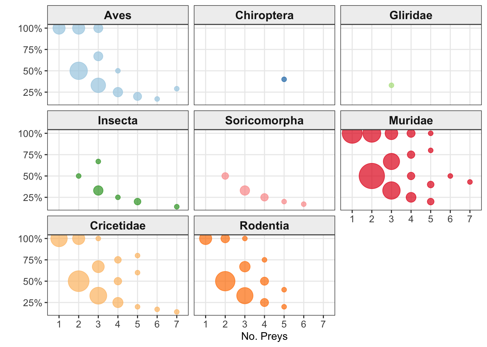
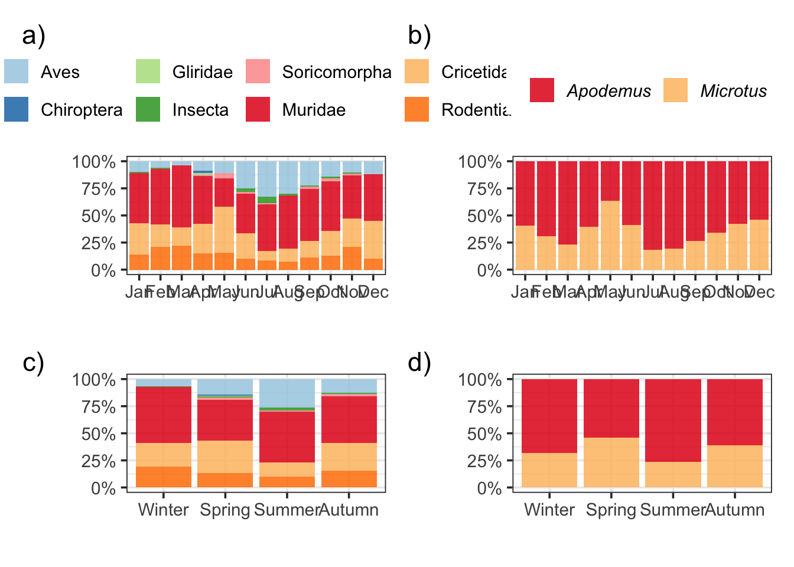

Rows: 1,117
Columns: 10
$ Progressivo.Borra <chr> "BEST113", "BEST113", "BEST47", "BEST47", "BEST48", …
$ Season <fct> Autumn, Autumn, Summer, Summer, Summer, Summer, Summ…
$ Date <date> 2024-09-30, 2024-09-30, 2024-09-30, 2024-09-30, 202…
$ Length <dbl> NA, NA, 3.69, 3.69, 5.91, 5.91, 5.91, 5.91, 3.40, 3.…
$ Width <dbl> NA, NA, 3.22, 3.22, 1.76, 1.76, 1.76, 1.76, 2.10, 2.…
$ Npreys <dbl> 2, 2, 2, 2, 4, 4, 4, 4, 3, 3, 3, 2, 2, 2, 2, 2, 2, 1…
$ TaxonAnalisi1 <fct> Muridae, Aves, Aves, Aves, Muridae, Muridae, Muridae…
$ TaxonAnalisi2 <chr> "Apodemus", NA, NA, NA, "Apodemus", "Apodemus", "Apo…
$ Taxon <chr> "A. sylvaticus", NA, NA, NA, "A. sylvaticus", "A. sy…
$ month <ord> Sep, Sep, Sep, Sep, Sep, Sep, Sep, Sep, Sep, Sep, Se…Borre2025
Analisi dieta
analisi descrittiva borre
# A tibble: 8 × 14
Season variable n min max median q1 q3 iqr mad mean sd
<fct> <fct> <dbl> <dbl> <dbl> <dbl> <dbl> <dbl> <dbl> <dbl> <dbl> <dbl>
1 Winter Length 150 2.01 6.12 3.50 3.05 4.14 1.09 0.741 3.63 0.841
2 Spring Length 72 1.97 5.61 3.62 3.12 4.23 1.11 0.808 3.67 0.837
3 Summer Length 92 2.06 5.91 3.52 3.07 4.13 1.06 0.771 3.62 0.791
4 Autumn Length 124 1.6 6.7 3.4 2.98 3.97 0.992 0.793 3.49 0.874
5 Winter Width 150 1.09 2.95 1.82 1.59 2.04 0.45 0.341 1.84 0.323
6 Spring Width 72 1.18 2.68 1.82 1.67 2.07 0.4 0.282 1.87 0.295
7 Summer Width 92 1.19 3.22 1.86 1.67 2.09 0.425 0.311 1.90 0.337
8 Autumn Width 124 0.56 3.11 1.83 1.64 2.08 0.435 0.297 1.88 0.384
# ℹ 2 more variables: se <dbl>, ci <dbl>| variable | Season | n | min | max | mean | sd |
|---|---|---|---|---|---|---|
| Length | Winter | 150 | 2.01 | 6.12 | 3.628 | 0.841 |
| Length | Spring | 72 | 1.97 | 5.61 | 3.668 | 0.837 |
| Length | Summer | 92 | 2.06 | 5.91 | 3.621 | 0.791 |
| Length | Autumn | 124 | 1.60 | 6.70 | 3.489 | 0.874 |
| Width | Winter | 150 | 1.09 | 2.95 | 1.835 | 0.323 |
| Width | Spring | 72 | 1.18 | 2.68 | 1.867 | 0.295 |
| Width | Summer | 92 | 1.19 | 3.22 | 1.898 | 0.337 |
| Width | Autumn | 124 | 0.56 | 3.11 | 1.883 | 0.384 |
Prede
N prede
# A tibble: 4 × 3
Season mean sd
<fct> <dbl> <dbl>
1 Winter 2.04 0.834
2 Spring 2.26 0.966
3 Summer 2.13 0.958
4 Autumn 2.10 0.960# A tibble: 1 × 6
.y. n statistic df p method
* <chr> <int> <dbl> <int> <dbl> <chr>
1 Npreys 525 2.62 3 0.454 Kruskal-WallisNessuna differenza stagionale per numero di prede. In media pari 2.1±0.9
Relazione nprede e ricchezza
# A tibble: 7 × 5
tot Numero_Borre Shannon No_Species Dev_Species
<fct> <int> <dbl> <dbl> <dbl>
1 1 134 0 1 0
2 2 233 0.440 1.64 0.482
3 3 127 0.623 2.05 0.677
4 4 22 0.736 2.41 0.908
5 5 7 0.810 2.71 1.11
6 6 1 1.24 4 NA
7 7 1 1.28 4 NA 
Non metterei il grafico ma un cenno al fatto, come suggeriva Livia, che all’aumentare del numero di prede per borra aumenta anche la ricchezza in specie trovate si potrebbe inserire.
figura 1
# A tibble: 8 × 13
TaxonAnalisi1 Jan Feb Mar Apr May Jun Jul Aug
<fct> <dbl> <dbl> <dbl> <dbl> <dbl> <dbl> <dbl> <dbl>
1 Aves 0.0990 0.0620 0.04 0.0864 0.111 0.25 0.329 0.299
2 Insecta 0.00990 0.00775 NA NA NA 0.0333 0.0571 0.0149
3 Muridae 0.465 0.512 0.57 0.444 0.267 0.367 0.429 0.493
4 Cricetidae 0.287 0.209 0.17 0.272 0.422 0.233 0.0857 0.119
5 Rodentia 0.139 0.209 0.22 0.148 0.156 0.1 0.0857 0.0746
6 Chiroptera NA NA NA 0.0247 NA NA NA NA
7 Gliridae NA NA NA 0.0123 NA NA NA NA
8 Soricomorpha NA NA NA 0.0123 0.0444 0.0167 0.0143 NA
# ℹ 4 more variables: Sep <dbl>, Oct <dbl>, Nov <dbl>, Dec <dbl># A tibble: 8 × 5
TaxonAnalisi1 Winter Spring Summer Autumn
<fct> <dbl> <dbl> <dbl> <dbl>
1 Aves 0.0667 0.145 0.264 0.128
2 Insecta 0.00606 0.0108 0.0236 0.00984
3 Muridae 0.515 0.376 0.470 0.430
4 Cricetidae 0.221 0.296 0.132 0.259
5 Rodentia 0.191 0.134 0.0980 0.154
6 Chiroptera NA 0.0108 NA NA
7 Gliridae NA 0.00538 NA NA
8 Soricomorpha NA 0.0215 0.0135 0.0197 # A tibble: 2 × 13
TaxonAnalisi2 Jan Feb Mar Apr May Jun Jul Aug Sep Oct
<chr> <dbl> <dbl> <dbl> <dbl> <dbl> <dbl> <dbl> <dbl> <dbl> <dbl>
1 Apodemus 0.592 0.690 0.767 0.607 0.367 0.588 0.818 0.805 0.734 0.660
2 Microtus 0.408 0.310 0.233 0.393 0.633 0.412 0.182 0.195 0.266 0.340
# ℹ 2 more variables: Nov <dbl>, Dec <dbl># A tibble: 2 × 5
TaxonAnalisi2 Winter Spring Summer Autumn
<chr> <dbl> <dbl> <dbl> <dbl>
1 Apodemus 0.684 0.542 0.766 0.611
2 Microtus 0.316 0.458 0.234 0.389
diversity
Levin=0 è uno specialista estremo, 1 è un generalista perfetto
Taxon 1
# A tibble: 8 × 5
TaxonAnalisi1 Winter Spring Summer Autumn
<fct> <int> <int> <int> <int>
1 Aves 22 27 78 39
2 Insecta 2 2 7 3
3 Muridae 170 70 139 131
4 Cricetidae 73 55 39 79
5 Rodentia 63 25 29 47
6 Chiroptera NA 2 NA NA
7 Gliridae NA 1 NA NA
8 Soricomorpha NA 4 4 6| Season | Richness | Abundance | Shannon | Evenness | Levins_Bn |
|---|---|---|---|---|---|
| Winter | 5 | 330 | 1.20 | 0.75 | 0.45 |
| Spring | 8 | 186 | 1.49 | 0.71 | 0.39 |
| Summer | 6 | 296 | 1.35 | 0.75 | 0.43 |
| Autumn | 6 | 305 | 1.39 | 0.77 | 0.48 |
Anche in primavera quando aumenta l’offerta e la varietà di prede aumenta mantiene un livello di specializzazione, senza diventare un vero generalista.
Taxon 2
# A tibble: 18 × 5
TaxonAnalisi2 Winter Spring Summer Autumn
<chr> <int> <int> <int> <int>
1 Apodemus 158 65 128 124
2 Carduelis 1 1 10 5
3 Fringilla 2 1 1 1
4 Microtus 73 55 39 79
5 Motacilla 2 2 1 NA
6 Mus 9 4 8 5
7 Passer 2 1 19 3
8 Rattus 3 1 3 2
9 Regulus 2 1 NA NA
10 <NA> 78 47 82 78
11 Crocidura NA 3 2 5
12 Hypsugo NA 2 NA NA
13 Muscardinus NA 1 NA NA
14 Phoenicurus NA 1 NA NA
15 Suncus NA 1 2 1
16 Turdus NA NA 1 NA
17 Erithacus NA NA NA 1
18 Sturnus NA NA NA 1# A tibble: 4 × 6
Season Ricchezza Abbondanza_Totale Shannon Evenness Levins_Bn
<fct> <int> <int> <dbl> <dbl> <dbl>
1 Winter 9 252 0.999 0.455 0.136
2 Spring 14 139 1.31 0.498 0.127
3 Summer 11 214 1.32 0.551 0.148
4 Autumn 11 227 1.14 0.477 0.137Taxon
# A tibble: 14 × 5
Taxon Winter Spring Summer Autumn
<chr> <int> <int> <int> <int>
1 A. sylvaticus 125 48 90 101
2 C. carduelis 1 1 10 5
3 F. coelebs 2 1 1 NA
4 M. musculus 9 4 9 5
5 M. savii 73 55 39 79
6 R. rattus 3 1 NA 1
7 C. suaveolens NA 3 NA 4
8 H. savi NA 2 NA NA
9 M. avellanarius NA 1 NA NA
10 S. etruscus NA 1 2 1
11 C. leucodon NA NA 2 1
12 R. norvegicus NA NA 1 NA
13 E. rubecula NA NA NA 1
14 S. vulgaris NA NA NA 1# A tibble: 4 × 6
Season Ricchezza Abbondanza_Totale Shannon Evenness Levins_Bn
<fct> <int> <int> <dbl> <dbl> <dbl>
1 Winter 6 213 0.943 0.526 0.231
2 Spring 10 117 1.20 0.522 0.172
3 Summer 8 154 1.18 0.569 0.202
4 Autumn 10 199 1.11 0.481 0.155